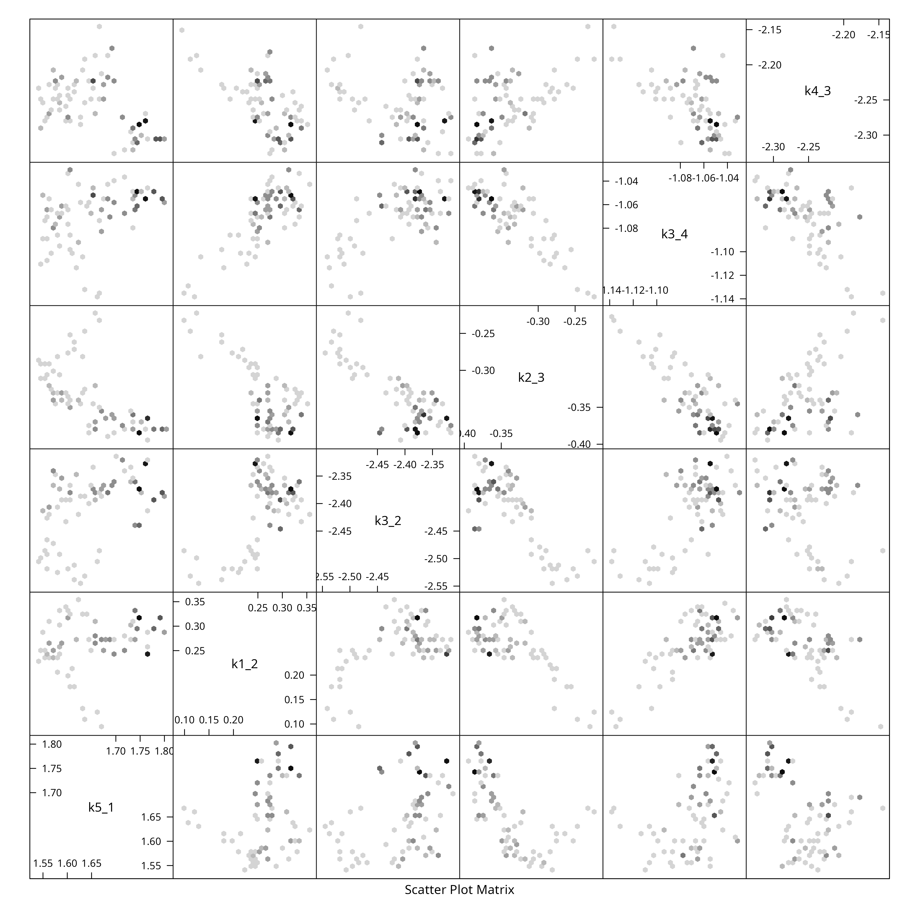
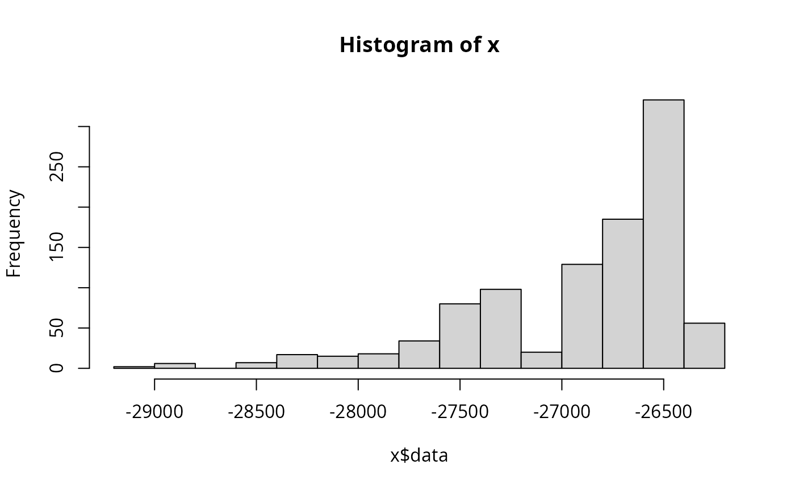
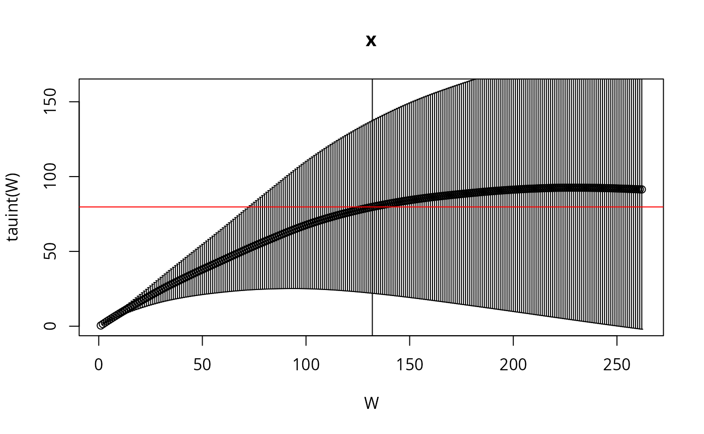
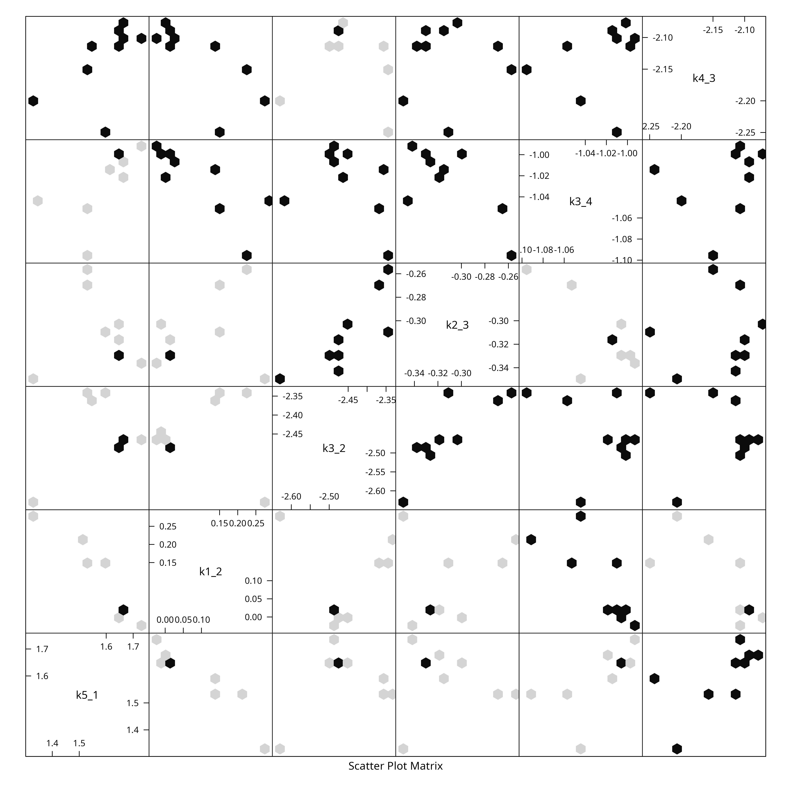

Uncertainty Quantification of AKAP79 (deterministic model)
sampleAKAP79.Rmd
library(uqsa)
library(parallel)
options(mc.cores=detectCores())AKAP79 is a comparativelyh big model (for a demonstartive example).
To even attempt to take a somewhat sufficiently large sample of AKAP79,
we shall use MPI and parallel tempering. There are several ways to
launch MPI processes (e.g. spawn processes). We will use the simplest
form: launch all MPI workers right from the start, using
mpirun -N 8 (or similar) and have all processes communicate
on MPI_COMM_WORLD, this requires very minimal MPI code in
R.
This approach doesn’t allow us to adapt the number of temperatures, which is probably not optimal but makes it easier to write and understand the code and increases performance significantly compared to a sequential Markov chain.
The R code we are going to execute is not a code block on this page
that we run in an interactive R session. Instead, it has to be a file
that we pass on to mpirun (a system command, in the
shell).
In this article we show the results of a parallel tempering SMMALA (simplified manifold Metropolis adjusted Langevin algorithm) run. The article titled Parallel chains with MPI explains how to prepare the R-script for mpirun execution – it includes the listing of the script we used in this article.
We will store all files related to this in a very predictable
location: /dev/shm; not R’s tempdir(). This is
because the R blocks in this article are not executed in the same R
session as the MPI workers will run in. Each MPI worker is its own
process; thus they all have different temporary directories. The
directory /dev/shm is a virtual directory that lives in the
machine’s RAM. It is standard on GNU/Linux systems, but not on MACOS, so
this example will not work verbatim there (it can be adjusted to work).
The sampling will take a while, even for a very small sample, so it is
not recommended to try out this article for no reason.
Create C Source Code
First we load the model in its tabular form and create all derived model files:
f <- uqsa_example("AKAP79")
m <- model_from_tsv(f)Create the ODE interpretation of m:
o <- as_ode(m)
#> Loading required namespace: pracma
cat(generate_code(o),sep="\n",file="/dev/shm/AKAP79.c")
c_path(o) <- "/dev/shm/AKAP79.c"
so_path(o) <- shlib(o)
saveRDS(o,file="/dev/shm/AKAP79-ode.RDS")Load the simulation instructions for o:
ex <- experiments(m,o)
#> Warning in experiments(m, o): CONFLICT: This model seems to have event based
#> transformations and conservation laws. These two concepts clash with one
#> another if a compound is conserved, but also changed by scheduled events.
saveRDS(ex,file="/dev/shm/AKAP79-ex.RDS")There is a high-level function that does most of what we need to do automatically:
p <- values(m$Parameter)
smmala <- high_level_smmala(m,o,ex,p)
#> The parameters are given in log10-scale, so the simulator will do the reverse transformation: 10^p.Plain Sample
h <- tune_step_size(smmala)
#> acceptance rate: 0, step-size: 0.0001;
#> acceptance rate: 0.15, step-size: 1e-07;
#> acceptance rate: 0.14, step-size: 5.29412e-08;
#> acceptance rate: 0.11, step-size: 2.52776e-08;
#> acceptance rate: 0.25, step-size: 8.19998e-09;
X <- smmala(smmala %@% "init",1000,h)
plot(
X %@% "logLikelihood",
type="s",
xlab="iteration",
ylab="logLikelihood"
)We shall only plot the pairs of the first 6 dimensions (this is a big model):
if (require(hexbin)){
hexplom(X[,seq(6)])
} else {
pairs(X[,seq(6)])
}
#> Loading required package: hexbin
Sample via MPI
Here we run a prepared R script from the command line (any POSIX shell will do: bash/zsh/fish/dash). We make the same number of iterations as before, to keep the execution time short.
N=4 # default number of MPI workers
[ -e '/proc/cpuinfo' ] && N=$((`grep -c processor /proc/cpuinfo`)) && nm="`grep -m1 'model name' /proc/cpuinfo`"
echo "We will use $N cores with $nm"
start_time=$(date +%s)
date
mpirun -H localhost:$N ./pt-smmala-akap79.R 1000 > /dev/null 2>&1
date
end_time=$(date +%s)
echo "Time spent sampling: $((end_time - start_time)) seconds ($(( (end_time - start_time)/60 )) minutes)."
#> We will use 8 cores with model name : Intel(R) Core(TM) i7-4700MQ CPU @ 2.40GHz
#> Fri Jun 26 02:15:02 PM CEST 2026
#> Fri Jun 26 02:15:02 PM CEST 2026
#> Time spent sampling: 0 seconds (0 minutes).On a high performance computing (hpc) cluster, the above would be in a slurm script or similar workload manager.
Inspect the Results
Here we check the integrated auto-correlation length (Markov chain time)
TMPDIR <- ifelse(dir.exists('/dev/shm'),'/dev/shm',Sys.getenv(TMPDIR,unset='/tmp'))
r <- 0 # rank we want to see
j <- 2 # iteration we want to see
f <- file.path(TMPDIR,sprintf("AKAP79-temperature-ordered-pt-smmala-sample-%i-for-rank-%i.rds",j,r))
Sample <- readRDS(file=f)
l <- attr(Sample,"logLikelihood")
plot(l,type="l",xlab="mcmc index",ylab="log-likelihood")
if (require(hadron)){
res <- hadron::uwerr(data=l,pl=TRUE)
tau <- ceiling(res$tauint + res$dtauint) # upper bound
} else {
A <- acf(l)
tau <- ceiling(sum(A$acf[A$acf>0.2]))
}
#> Loading required package: hadron
#>
#> Attaching package: 'hadron'
#> The following object is masked from 'package:base':
#>
#> kappa

We reduce the sample for plotting purposes, by showing only every \(\tau_{\text{int.}}\)-th point and create a pairs plot for the first 6 parameters:
X <- Sample[seq(1,NROW(Sample),by=tau),]
colnames(X) <- rownames(m$Parameter)
if (require(hexbin)){
hexplom(X[,seq(6)],xbins=12)
} else {
pairs(X[,seq(6)])
}
Bigger Sample
Running the script in the previous section for many more iterations, results in a much bigger sample:
N=4 # default number of MPI workers
[ -e '/proc/cpuinfo' ] && N=$((`grep -c processor /proc/cpuinfo`)) && nm="`grep -m1 'model name' /proc/cpuinfo`"
echo "We will use $N cores with $nm"
start_time=$((`date +%s`))
date
#
mpirun -H localhost:$N ./pt-smmala-akap79.R 5e5 > /dev/null 2>&1
# much bigger sample: ^^^
date
end_time=$((`date +%s`))
echo "Time spent sampling: $((end_time - start_time)) seconds ($(( (end_time - start_time)/60 )) minutes)."This results in a much less spotty posterior plot: